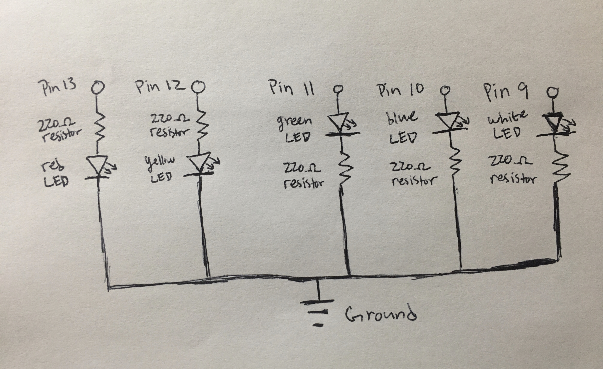

Schematic

As seen in the above schematic, the circuit contains 5 LEDs of different colors—
red, yellow, green, blue, and white. These were all the single-color LED variations
provided in our starter kit. I wanted to try out all the colors and see what they were like.
For ease of wiring, all resistors were 220 ohms, which meet the minimum 160 ohms of resistance
required for even the LEDs with the greatest voltage drops of 1.8V. (Calculation: 5V-1.8v / 0.02A)
Circuit (Image)

Here, we see the entire breadboard with the red LED lighting up. A better view
can be found in the top-down image below. As will be seen shortly, there were
three different approaches used to wire the LEDs.

Through the top-down view, it's more clear that the top LED (red) had more complex
wiring than the bottom three LEDs. The first approach (red LED) involved using 4 wires (pin-to-board,
LED-to-board, board-to-ground, and ground to ground pin).
This was the most complex and was messy and took up the most space. The second approach (yellow LED)
used 3 wires (pin-to-board, board-to-ground, and ground to ground pin). A slight improvement!
The final approach (green, blue, and white LEDs) only required 2 wires (pin-to-board, and ground to ground pin).
The final approach was inspired by an example from Sparkfun here: https://learn.sparkfun.com/tutorials/sik-experiment-guide-for-arduino---v32/experiment-4-driving-multiple-leds.
It showed me that the resistor can be directly plugged into the ground side of the board, reducing one wire.
It was interesting to find out that the resistor can be located either before or after the LED—it didn't matter.
As long as the resistor was in the circuit somewhere, the LED would be protected.
On the flip side, it was still important to keep the anode and cathode sides of the LED in the proper position.
Cathode points negative/ground, and anode points positive/power supply.
Firmware (Code Snippet)
/*
For Loop Iteration
Demonstrates the use of a for() loop.
Lights multiple LEDs in sequence, then in reverse.
The circuit:
- LEDs from pins 2 through 7 to ground
created 2006
by David A. Mellis
modified 30 Aug 2011
by Tom Igoe
modified January 12 2020
by Kevin Kuo
This example code is in the public domain.
http://www.arduino.cc/en/Tutorial/ForLoop
*/
// An int for the delay amount in milliseconds.
// The higher the number, the slower the timing.
int timer = 400;
// Sets up pins as outputs.
void setup() {
// Use a for loop to initialize each pin as an output.
for (int thisPin = 9; thisPin < 14; thisPin++) {
// Initialize specified pin as an output.
pinMode(thisPin, OUTPUT);
}
}
// Light up individual LED bulbs in a continuous loop
// from lowest pin to highest pin, then reversed from
// highest pin to lowest pin.
void loop() {
// Use a for loop to cycle from the lowest pin to the highest pin.
for (int thisPin = 9; thisPin < 14; thisPin++) {
// Turn the specified pin on.
digitalWrite(thisPin, HIGH);
// Use declared int timer to wait before switching pin off
// and moving to next pin.
delay(timer);
// Turn the specified pin off.
digitalWrite(thisPin, LOW);
}
// Use a for loop to cycle from the highest pin to the lowest pin.
for (int thisPin = 13; thisPin >= 9; thisPin--) {
// Turn the specified pin on.
digitalWrite(thisPin, HIGH);
// Use declared int timer to wait before switching pin off
// and moving to next pin.
delay(timer);
// Turn the specified pin off.
digitalWrite(thisPin, LOW);
}
}
Luckily, much of the assignment could use code shown as example code in
the class slides and found in the public domain here: http://www.arduino.cc/en/Tutorial/ForLoop.
While similar, some modifications were made. Namely, the pins were changed to
appropriately map to the pins used for my version of the circuit, and the delay was changed to 400 ms.
The delay was extended to provide a more calming speed. The original
100 ms was fairly intense to look at—lots of flashing lights in too short
of a timespan.
Circuit Operation (Animated GIF)

The GIF shows the LED lights turning on and off in order, from left to right,
or bottom to top (pins low to high), then reversing. The simple sequence
is more pleasing to the eyes and smooth compared to if the lights were turned on and off
out of order, or if it hopped from the end back to the start.